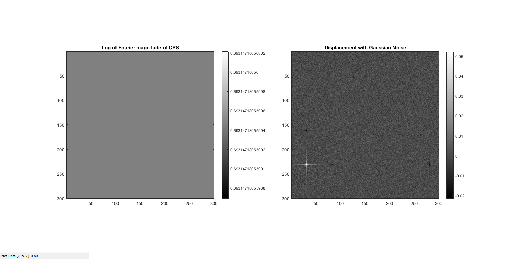

Contents
MyMainScript
tic;
Setting the color scale
my_num_of_colors = 256;
col_scale = [0:1/(my_num_of_colors-1):1]';
my_color_scale = [col_scale,col_scale,col_scale];
to_save = 1;
[x,y] = deal(50,50);
[l,b] = deal(50,70);
[t_x,t_y] = deal(-30,70);
I = zeros([300 300]);
J = zeros([300 300]);
I(y:y+b-1,x:x+l-1) = 255;
J(y+t_y:y+t_y+b-1,x+t_x:x+t_x+l-1) = 255;
Part 1
fft_I = fftshift(fft2(I));
fft_J = fftshift(fft2(J));
cross_power_spectrum = (fft_I .* conj(fft_J))./abs(fft_I .* fft_J);
cross_power_spectrum(isnan(cross_power_spectrum)) = 1;
log_cps = log(abs(cross_power_spectrum)+1);
final_pic = ifft2(ifftshift(cross_power_spectrum));
savefig(my_color_scale,log_cps,final_pic,'Displacement','../images/displacement.png',0,to_save);
Gaussian Noise added
I = I + 20*randn(size(I));
J = J + 20*randn(size(J));
fft_I = fftshift(fft2(I));
fft_J = fftshift(fft2(J));
cross_power_spectrum = (fft_I .* conj(fft_J)) ./ abs(fft_I .* fft_J);
log_cps = log(abs(cross_power_spectrum)+1);
final_pic = ifft2(ifftshift(cross_power_spectrum));
savefig(my_color_scale,log_cps,final_pic,'Displacement with Gaussian Noise','../images/displacement-with-gaussian-noise',0,to_save);
toc;

Questions:
Helper function to display and save processed images
function savefig(my_color_scale,original_pic,modified_pic,title_name,file_name,is_color,to_save)
if to_save==1
fig = figure('units','normalized','outerposition',[0 0 1 1]); colormap(my_color_scale);
else
fig = figure; colormap(my_color_scale);
end
if is_color == 1
colormap jet;
else
colormap(gray);
end
subplot(1,2,1), imagesc(original_pic), title('Log of Fourier magnitude of CPS'), colorbar, daspect([1 1 1]), axis tight;
subplot(1,2,2), imagesc(modified_pic), title(title_name), colorbar, daspect([1 1 1]), axis tight;
impixelinfo();snapnow;
if to_save == 1
saveas(fig,file_name),close(fig);
end
end
Elapsed time is 3.823626 seconds.